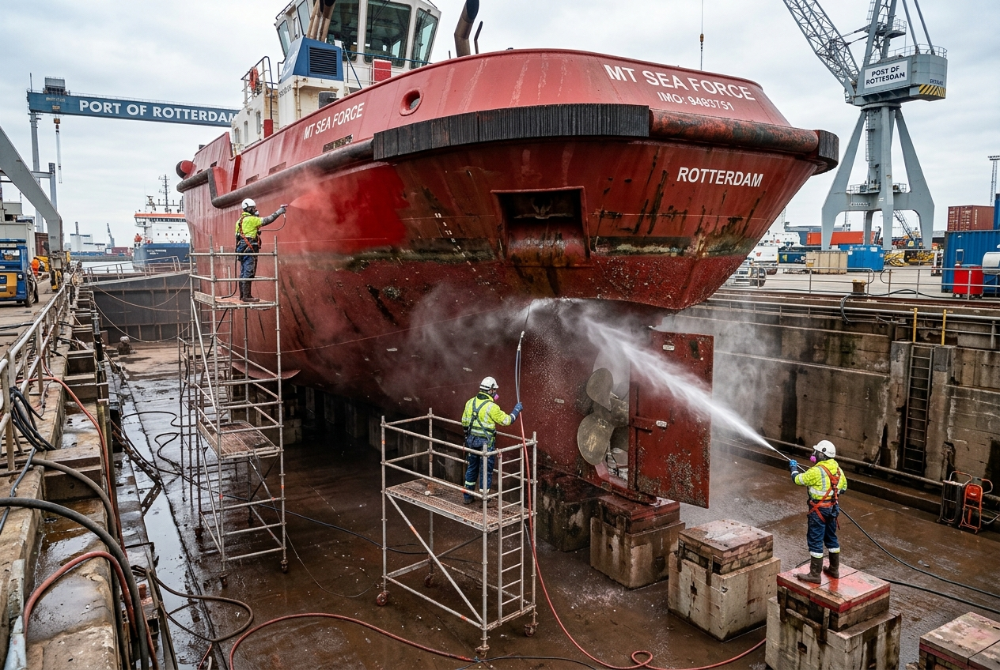

Arenado de cascos, tratamiento de cubiertas, raschinaje y limpieza de tanques de lastre y sentinas.
Las embarcaciones y remolcadores operan en las condiciones marinas más rigurosas de la costa patagónica. En Servicios Industriales San Cayetano prestamos servicios navales especializados, incluyendo el tratamiento superficial anticorrosivo de cascos y cubiertas mediante arenado y recubrimiento náutico de alta gama, remoción mecánica de incrustaciones biológicas (raschinaje) y vaciado y lavado técnico de tanques internos.

Limpieza abrasiva SA 2 o SA 2½ de la chapa del casco viva/muerta y aplicación de esquemas anti-fouling y epoxis náuticos.
Limpieza mecánica manual y con hidrolavadoras de alta presión para eliminar la fauna marina consolidada en el fondo del buque.
Lavado profundo, extracción de lodos salinos y secado interior para inspecciones estructurales de mamparos.
Limpieza de sentinas de motor principal y carter, desengrasado profundo y extracción segura de aguas hidrocarburadas.
Varado o elevación de la embarcación, lavado neumático con agua dulce a alta presión para eliminar sales cristalizadas de la superficie.
Raspado y remoción mecánica de caracolillos e incrustaciones biológicas en la obra viva, hélices y timones.
Proyección abrasiva seca para eliminar la pintura envejecida degradada y el óxido de hierro hasta llegar al metal sano.
Aplicación sucesiva de imprimaciones epoxi anticorrosivas y capa final de pintura autopulimentante o anti-incrustante para protección en navegación.